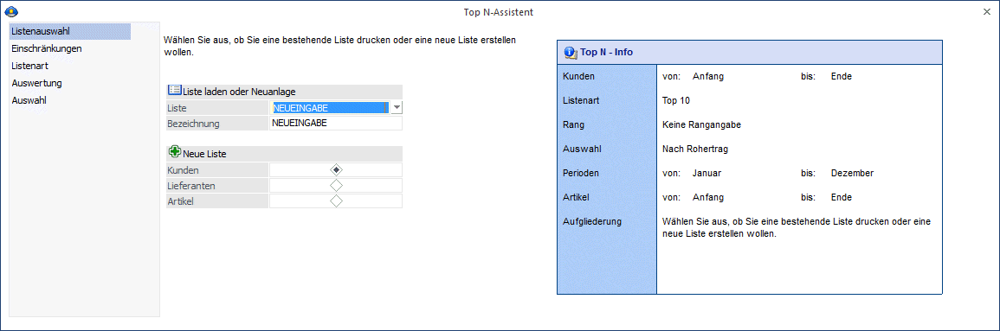
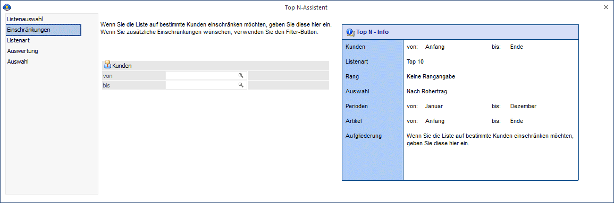
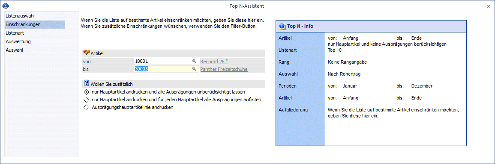
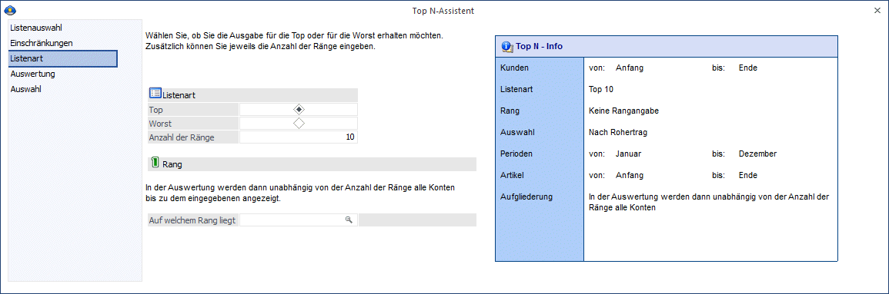
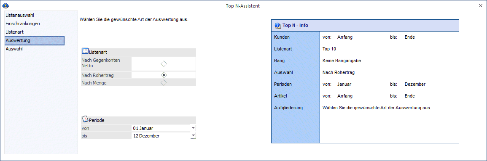
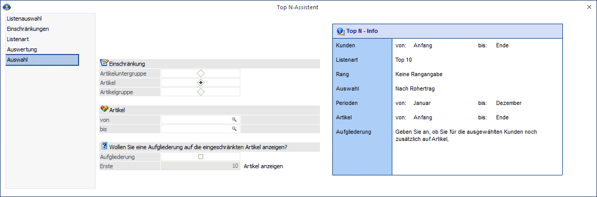
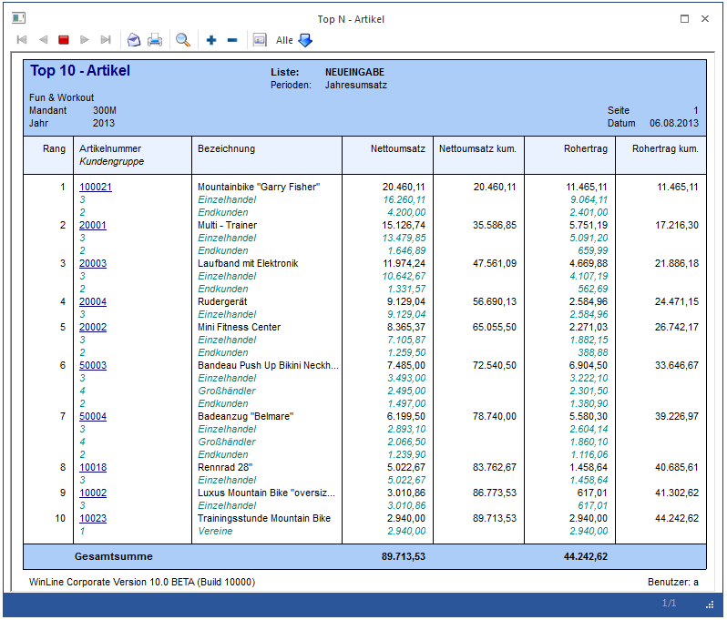
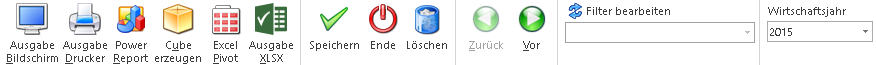

Mit dieser Liste haben Sie die Möglichkeit sich eine Aufstellung geben zu lassen, welche Kunden/Lieferanten den höchsten bzw. den geringsten Umsatz gemacht haben (gilt auch für Artikel). Für Kunden und Artikel kann auch der Rohertrag ausgewertet werden.
Der Top-N-Assistent hilft dem Anwender Schritt für Schritt die gewünschte Top N-Liste zu erstellen. Die Eingaben die für die Suche gerade notwendig sind, werden ausführlich erklärt, mögliche Optionen werden mit Matchcodes oder Auswahllisten angeboten.
Der Top N-Assistent kann unter dem Menüpunkt…
1 WinLine INFO
1 Info
1 Top N-Assistent
… aktiviert werden.
Listenauswahl

Ø Liste laden oder Neuanlage
Hier können Sie entscheiden, ob Sie eine bestehende Listendefinition verwenden oder eine neue Liste erstellen möchten.
Bestehende Liste auswählen
Wird unter Liste eine bestehende Liste aus der Auswahllistbox gewählt, so kann mittels "Vor" Button oder durch Mausklick auf den Eintrag "Auswahl" in der Navigation in den letzten Schritt des Assistenten gewechselt werden und die Auswertung mit einem der Ausgabe Buttons ausgegeben werden.
Neue Liste anlegen
Wird in der Auswahllistbox NEUEINGABE gewählt, kann unter Bezeichnung ein Name für die neue Liste vergeben werden.
Ø Neue Liste
Hier treffen Sie die Auswahl, ob die Liste für
ü Kunden
ü Lieferanten
ü Artikel
ausgegeben werden soll.
Mit dem "Vor" Button oder mittels Mausklick auf den nächsten Eintrag "Einschränkungen" in der Navigation gelangt man in den nächsten Schritt.
Einschränkungen

In diesem Schritt des Assistenten haben Sie je nach getroffener Auswahl folgende Eingabemöglichkeiten um die Listauswertung einzuschränken.
Ø Kunden von / bis
Einschränkung der Kundenummern, die ausgewertet werden sollen.
Ø Lieferanten von / bis
Einschränkung der Lieferantenkonten, die ausgewertet werden sollen.
Ø Artikel von / bis
Einschränkung der Artikel, die ausgewertet werden sollen.
Zusätzlich können für Artikellisten noch folgende Einschränkungen definiert werden:
ü Nur Hauptartikel andrucken und alle Ausprägungen unberücksichtigt lassen.
ü Nur Hauptartikel andrucken und für jeden Hauptartikel alle Ausprägungen auflisten.
ü Ausprägungshauptartikel nie andrucken.

Mit dem "Vor" Button oder mittels Mausklick auf den nächsten Eintrag "Listenart" in der Navigation gelangt man in den nächsten Schritt.
Listenart

In diesem Fenster wird die Listenart definiert.
Ø Listenart
ü Top
ü Worst
Sie können wählen, ob Sie die Ausgabe für die Top oder für die Worst (schlechtesten) erhalten möchten.
ü Anzahl der Ränge
Sie können die Anzahl der auszuwertenden Ränge eingeben (z. B. die besten 10 Kunden).
Ø Auf welchem Rang liegt:
Sie können nur ein Konto bzw. Artikel eingeben, wenn Sie wissen möchten, auf welchem Rang dieses eine Konto bzw. dieser eine Artikel liegt.
Mit dem "Vor" Button oder mittels Mausklick auf den nächsten Eintrag "Auswertung" in der Navigation gelangt man in den nächsten Schritt.
Auswertung

In diesem Schritt des Assistenten definieren Sie die gewünschte Art der Auswertung.
Ø Listenart für Kunden und Lieferanten
ü Nach Gegenkonten Netto
ü Nach Rohertrag
Ø Listenart für Artikel
ü Nach Umsatz
ü Nach Rohertrag
Ø Periodeneinschränkung
Es kann auf bestimmte Perioden (lt. Mandantenstamm) eingeschränkt werden, um Jahres- oder Periodenwerte auszugeben.
Für Kreditoren kann nur eine Jahres- und Periodenumsatzliste (also keine Listenart "Rohertrag") ausgegeben werden.
Mit dem "Vor" Button oder mittels Mausklick auf den nächsten Eintrag "Auswahl" in der Navigation gelangt man in den nächsten Schritt.
Auswahl

In diesem Schritt des Top N Assistenten kann je nach Listenart eine weitere Einschränkung vorgenommen werden:
Ø Einschränkung Kunden oder Lieferanten nach Gegenkonto netto
ü Konten
ü BKZ
ü BWA
Ø Einschränkung Kunden nach Rohertrag
ü Artikel
ü Artikelgruppe
ü Artikeluntergruppe
Ø Einschränkung Artikel nach Umsatz oder nach Rohertrag
ü Kunden
ü Kundengruppe
Ø Von / Bis
Einschränkung des Bereiches.
Ø Aufgliederung der Einschränkungen
Je nachdem welche Einschränkung gewählt wurde, besteht die Möglichkeit einer Aufgliederung der ersten "x" Datensätze.
Beispiel 1
Wurde als Einschränkung einer Top N-Liste für Kunden "Konten" gewählt, so werden in der Ausgabe zusätzlich zu den Kundenkonten auch die bebuchten Gegenkonten angezeigt:
Beispiel 2
Wurde als Einschränkung einer Top N-Liste für Artikel "Kundengruppen" gewählt, so werden in der Ausgabe zusätzlich zu den Artikeln auch jene Kundengruppen angezeigt die einen Umsatz mit diesem Artikel gemacht haben:

Buttons

Ø Ausgabe Bildschirm
Mittels "Ausgabe Bildschirm" Button oder der Tastenkombination ALT + B wird die Auswertung am Bildschirm ausgegeben.
Ø Ausgabe Drucker
Mittels "Ausgabe Drucker" Button oder der Tastenkombination ALT + D wird die Auswertung am Drucker ausgegeben.
Ø Power Report
Durch Drücken des Buttons "Power Report" wird die Auswertung auf Basis von Cube-Daten grafisch dargestellt. Die Ausgabe ist individuell anpassbar und erfolgt in der Form von "Widgets", die unterschiedlichsten Darstellungen ermöglichen.
Ø Cube erzeugen
Mittels "Ausgabe Cube erzeugen" Button oder der Tastenkombination ALT + U wird die Auswertung als Cube ausgegeben.
Ø Excel Pivot
Mittels "Excel Pivot" Button oder der Tastenkombination ALT + G wird die Auswertung als Excel Pivot ausgegeben.
Ø Ausgabe XLSX
Mittels "Ausgabe XLSX" Button oder der Tastenkombination ALT + X wird die Auswertung als Excel (xlsx) ausgegeben.
Ø Speichern
Mit dem Speichern-Button kann eine neue Liste gespeichert werden.
Ø Ende
Mit Hilfe des Buttons "Ende" bzw. der Taste ESC wird das Fenster geschlossen.
Ø Löschen
Bestehende Listen können über den "Löschen" Button gelöscht werden.
Ø Zurück
Mit dem Zurück-Button kommen Sie in der Listenauswahl einen Schritt zurück.
Ø Vor
Mit dem Vor-Button kommen Sie in die Listenauswahl einen Schritt vorwärts.
Ø Filter bearbeiten
Mit dem Filter können noch zusätzliche Einschränkungskriterien vergeben werden.
Ø Wirtschaftsjahr
Durch diese Auswahlbox kann das Wirtschaftsjahr, für welches die Daten ausgewertet werden sollen, ausgewählt werden.